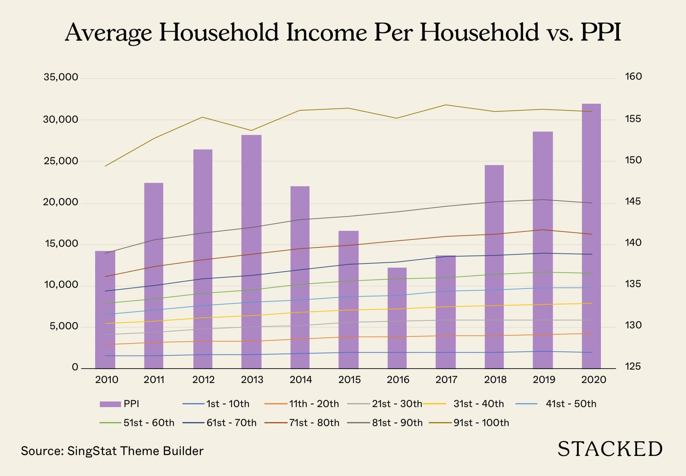

Project Proposal – Income vs Prices (Singapore, 2010–?)
1 Project Proposal – Income vs Prices (Singapore, 2010–?)
1.1 1. Chosen Visualization and Story
1.1.1 1.1 Visualization Example (Original)
The original visualization, “Average Household Income Per Household vs Purchasing Power Index (PPI)”, combines stacked bar charts representing average household income across income deciles with an overlaid Purchasing Power Index (PPI) line across time. The intention of the visualization is to compare income growth with changes in purchasing power at a national level.
1.1.2 1.2 Intended Story / Key Message
The refined research question guiding this project is:
Does a high local purchasing power index translate into affordability across income groups, or does it primarily reflect outcomes for higher-income households?
While average household income shows an upward trend across most income deciles between 2010 and 2019 (with a decline in 2020), rising housing prices suggest that improvements in purchasing power and affordability may not be evenly experienced. This project aims to highlight how aggregated indicators may mask distributional differences in affordability across income groups in Singapore.
1.2 2. Strengths and Weaknesses of the Original Visualization
1.2.1 2.1 Strengths
- Provides a clear high-level comparison between income growth and purchasing power.
- Time-series structure allows identification of long-term trends and periods of divergence.
- Familiar and accessible chart design suitable for non-technical audiences.
- Inclusion of income deciles acknowledges income heterogeneity across households.
1.2.2 2.2 Weaknesses
- Dual-axis design may lead to visual misinterpretation.
- Displaying multiple income deciles simultaneously creates visual clutter.
- Lack of direct affordability metrics, particularly for essential costs such as housing.
- No breakdown of cost categories, limiting insight into affordability pressures.
- Stacked bars reduce comparability across income groups.
- Aggregated purchasing power obscures distributional affordability outcomes.
1.3 3. Proposed Improvements and Justifications
1.3.1 3.1 Reduce the Number of Income Groups Displayed
Income groups will be aggregated into broader categories (Bottom 20%, Middle 60%, Top 20%) to reduce cognitive load and improve interpretability.
1.3.2 3.2 Improve Comparison Between Income and Prices
The stacked bar chart will be replaced with a faceted line chart to enable clearer comparison of income and housing price trends across income groups.
1.3.3 3.3 Incorporate Purchasing Power (Real Income)
Household income will be adjusted using CPI to reflect real income changes, improving interpretation of purchasing power.
1.3.4 3.4 Improve Visual Hierarchy and Narrative
Clear titles, consistent scales, and annotations will be used to guide interpretation and highlight divergence in affordability trends.
1.4 4. Data Sources
The datasets used in this project are obtained from official Singapore government sources to ensure reliability, consistency, and relevance.
1.4.1 Household Income by Income Decile
- Source: Department of Statistics Singapore (SingStat)
- Dataset: Average Monthly Household Income by Income Decile
- URL: https://tablebuilder.singstat.gov.sg/table/CT/17880
- Justification: This dataset provides a disaggregated view of household income across income deciles, which is essential for analysing distributional differences in affordability outcomes.
1.4.2 Consumer Price Index (CPI – All Items)
- Source: Department of Statistics Singapore (SingStat)
- URL: https://www.singstat.gov.sg/whats-new/latest-news/cpi-highlights
- Justification: CPI is used to adjust nominal household income into real terms, allowing purchasing power and affordability trends to be analysed more accurately over time.
1.4.3 HDB Resale Price Index
- Source: data.gov.sg (Housing & Development Board)
- URL: https://data.gov.sg/collections/189/view
- Justification: The HDB resale price index is used as a proxy for housing costs, which represent the largest expenditure component for most Singapore households.
1.4.4 Optional / Contextual Datasets
The following datasets were explored for contextual understanding but are not used in the final visualization: - Private Residential Property Price Index – https://data.gov.sg/collections/1676/view
- Rental Price Indices – https://data.gov.sg/datasets/d_c9f57187485a850908655db0e8cfe651/view
1.5 5. Data Workflow: Raw to Visualization-Ready
1.5.1 5.1 Raw Data Ingestion
Raw datasets are downloaded from official sources and aligned to a common annual time range (2010 onwards).
1.5.2 5.2 Data Cleaning and Standardisation
Data is inspected for missing values and inconsistencies. Time variables and income group labels are standardised, and irrelevant fields are removed.
1.5.3 5.3 Data Transformation and Aggregation
Nominal income values are adjusted using CPI where necessary. Income and housing price series are converted into normalised indices (base year = 100) and aggregated to annual frequency.
1.5.4 5.4 Validation and Quality Checks
Merged datasets are validated to ensure accurate alignment across time and income groups, with checks for duplication or data loss.
1.5.5 5.5 Final Tidy Dataset
The final dataset is reshaped into long format with variables: Year, Income Group, Measure Type, and Index Value, suitable for faceted line chart visualisation.
1.6 6. (Optional) Planned Data Analysis
Descriptive and comparative trend analysis will be conducted to: - Compare income and housing price growth rates across income groups. - Identify periods where housing prices outpace income growth. - Support visual annotations highlighting divergence or convergence trends.
The analysis is descriptive and not causal.
1.7 7. Planned Work Distribution
| Team Member | Responsibilities |
|---|---|
| Shina Shih Xin Rong | Project coordination, narrative development, Quarto assembly |
| Jeanie Cherie Chua Yue-Ning | Data collection and cleaning |
| Claudia Yue Xin Ying | Data transformation and index construction |
| Nurul Zahirah Binte Muhamadnoh | Visualization design and implementation |
| Anushka Chourasia | Data validation and analysis support |
1.8 Appendix (Optional): Alternative Design Concepts
Alternative visualization designs and additional cost indicators were explored during the ideation phase but not adopted to maintain clarity and focus on a single visualization.